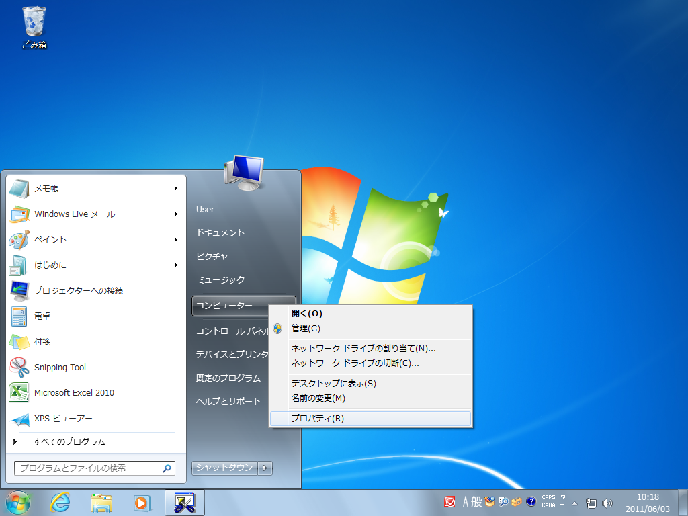
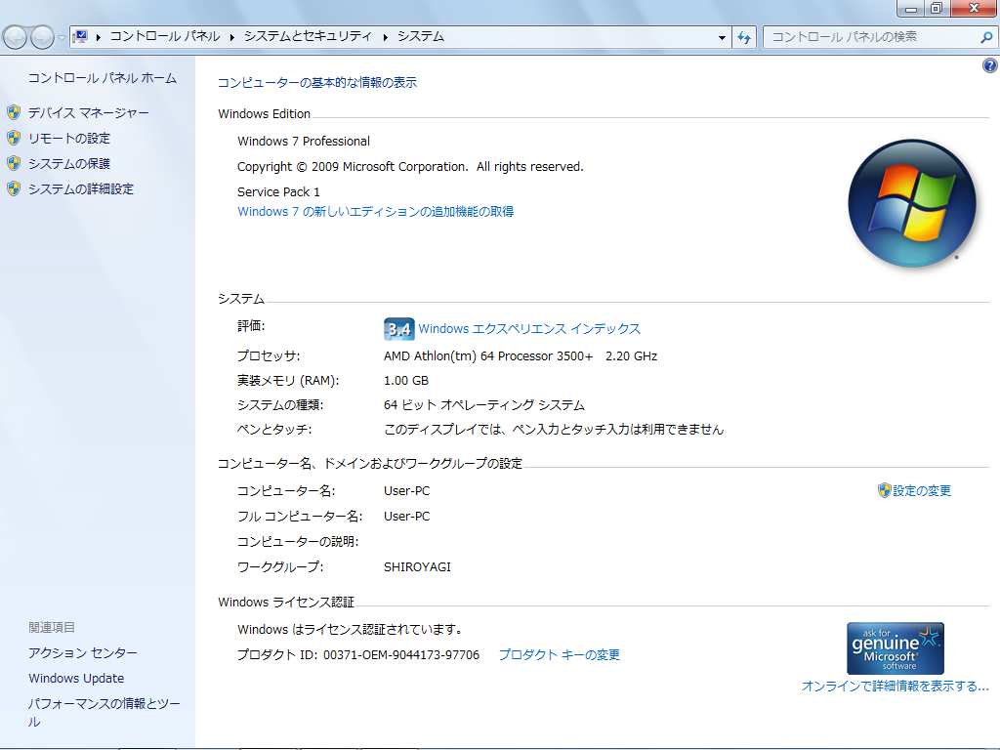
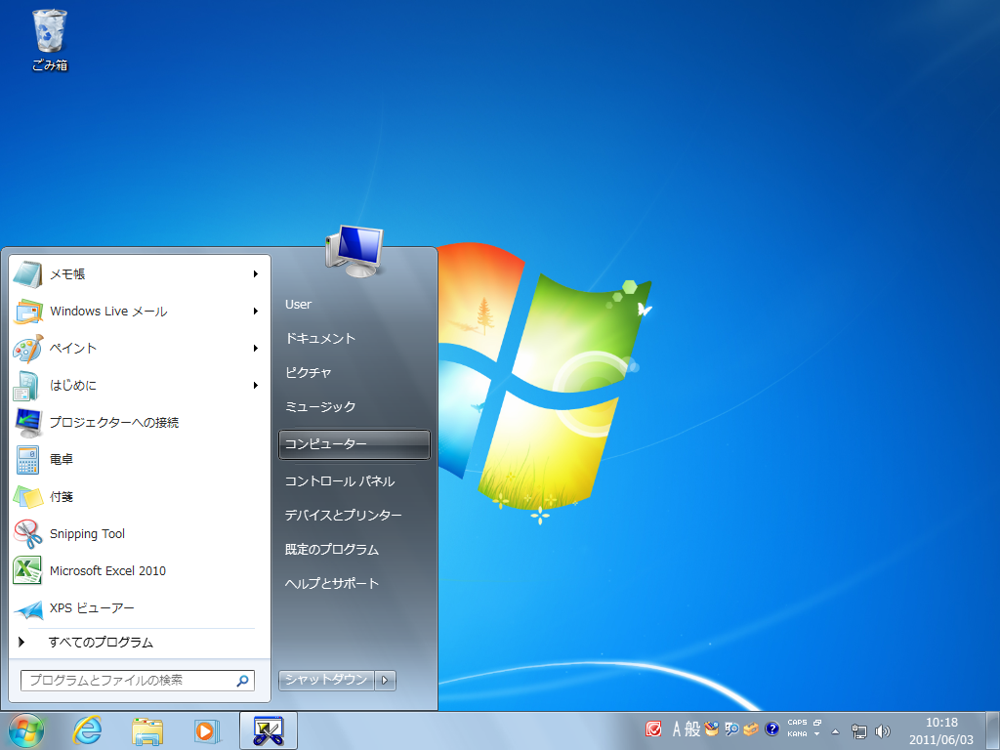
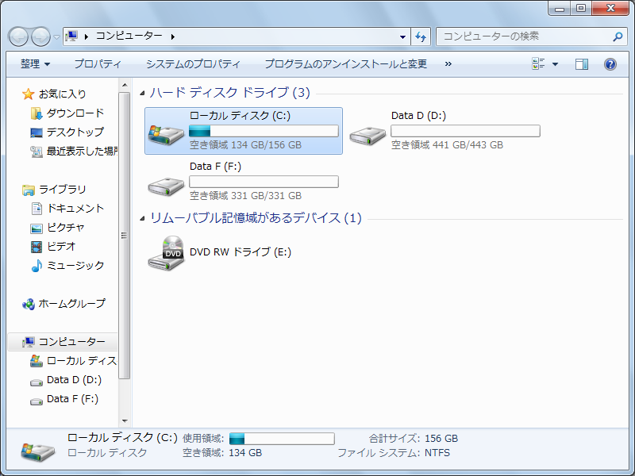
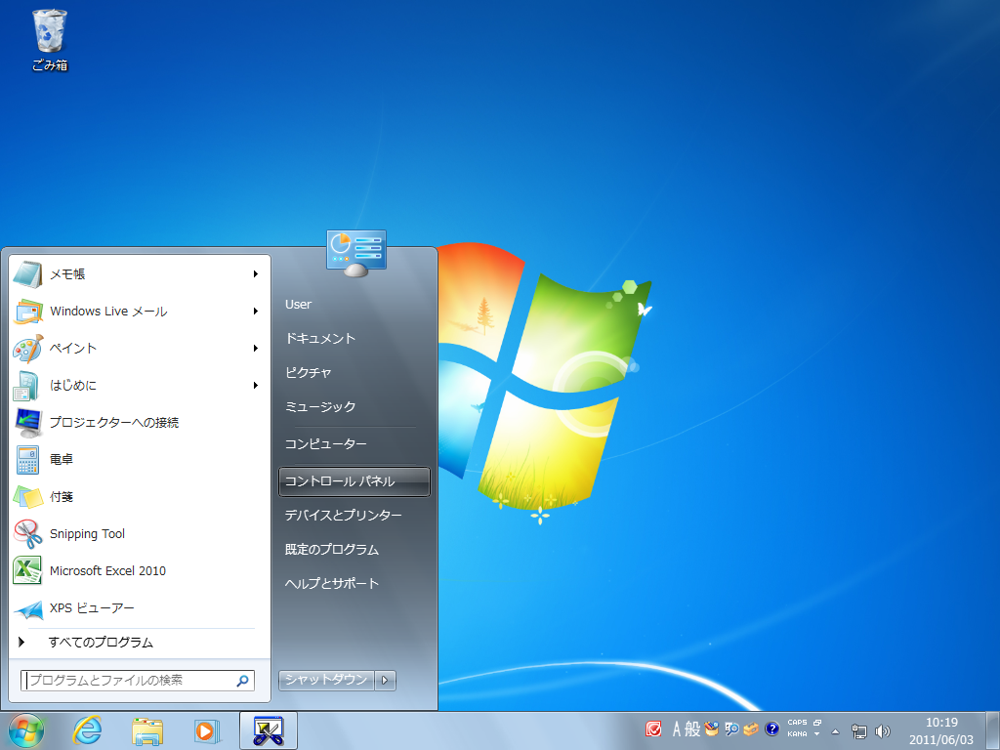
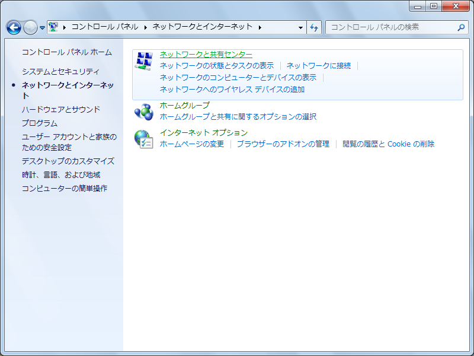
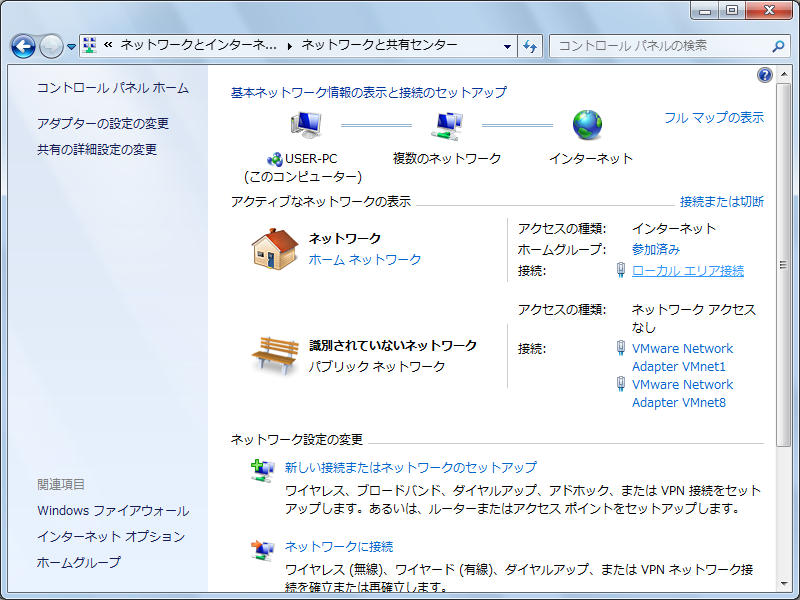
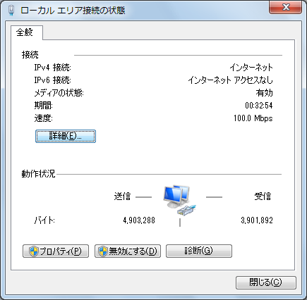
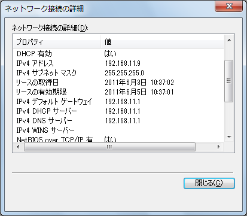

第3章 動作環境の確認とDockerのインストール - Next-L Enju インストールマニュアル（Docker編）
動作環境を確認する
作業を開始する前に，Enjuをインストールするコンピュータの環境を確認します。 この文書では，Windows 10 でのやり方について説明します。
Windowsが64bit版であるかの確認，使用可能メモリ容量の確認
Windowsが64ビット版であるか，メモリ容量をシステムのプロパティで確認します。※32bit版では動作しません
-
［スタート］ボタンをクリックし，［コンピュータ］を右クリックします。
-
［プロパティ］をクリックします。
 -
以下の項目を確認します。
-
システムの種類 : 64bitのオペレーティングシステム
-
実装メモリ : 使用可能容量が 4.00GB 以上

-
ハードディスク空き容量の確認
Enjuコンテナのインストールと動作に必要なハードディスクの空き容量を確認します。
-
［スタート］ボタンをクリックし，［コンピュータ］を選択します。
 -
以下の項目を確認します。
-
ドライブの空き容量 : 25.0GB以上を推奨

-
|
ハードディスクに必要な空き容量は，蔵書規模により異なります。25.0GBは蔵書が20 万件の規模を想定しています。これよりも蔵書規模が大きい場合は，より多くの容量が必要となります。 |
IPアドレスの確認
ホストOSのIPアドレスを確認します。
-
［スタート］ボタンをクリックし，［コントロールパネル］を選択します。
 -
［ネットワークとインターネット］をクリックします。

-
［ネットワークと共有センター］をクリックします。
 -
［アクティブネットワークの表示］で［ローカルエリア接続］または［ワイヤレスネットワーク接続］をクリックします。
 -
［詳細］をクリックします。
 -
表示された画面で，以下の情報をメモなどに記録します。
-
DHCPの状態
-
IPv4アドレス
-
IPv4サブネットマスク
-
IPv4デフォルトゲートウェイ
-
IPv4 DNSサーバ

-
Dockerのダウンロードとインストール
ここでは Windows の場合を説明しますが，Mac，Linuxなど様々なOS上で動きます。
Dockerのダウンロード
Docker DesktopをDocker社のWebサイトからダウンロードします。 次のWebページでDownloadsをクリックします。
Dockerのインストール
前項でダウンロードしたファイルを実行し，Docker Desktopをインストールします。